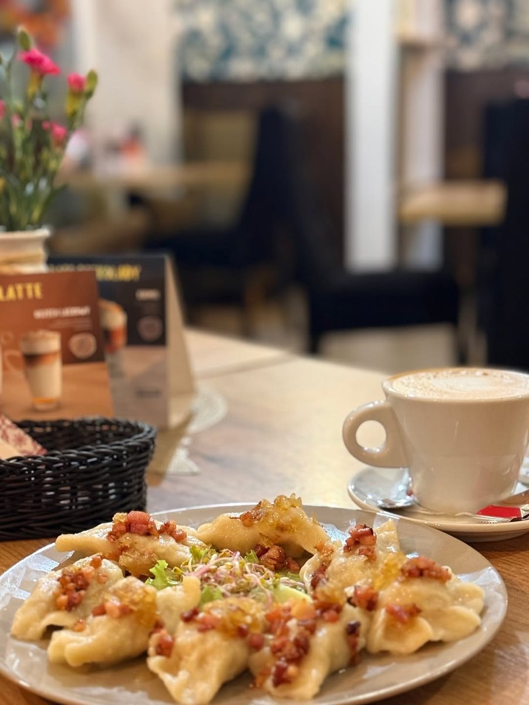
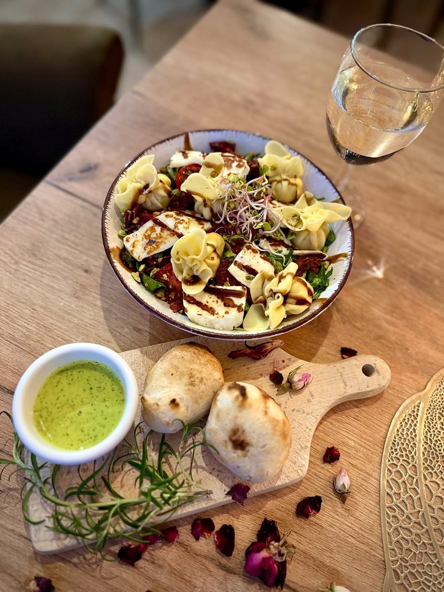
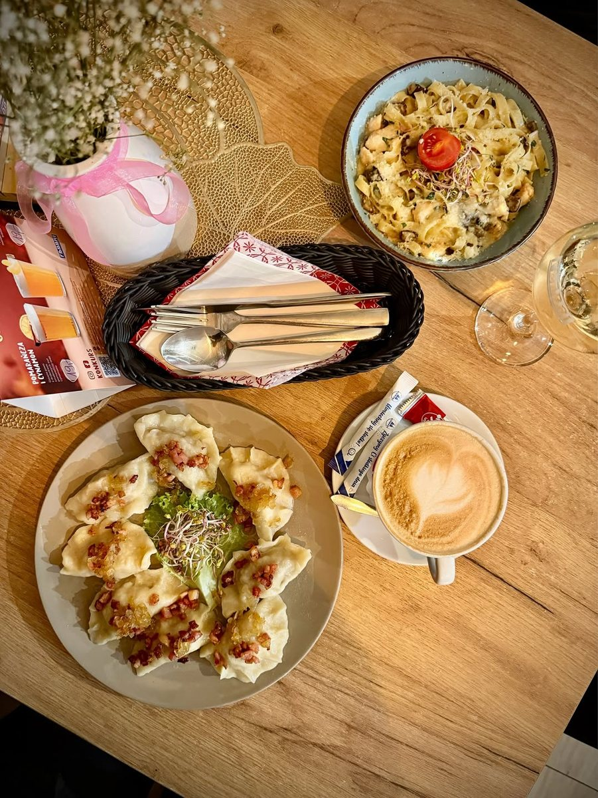
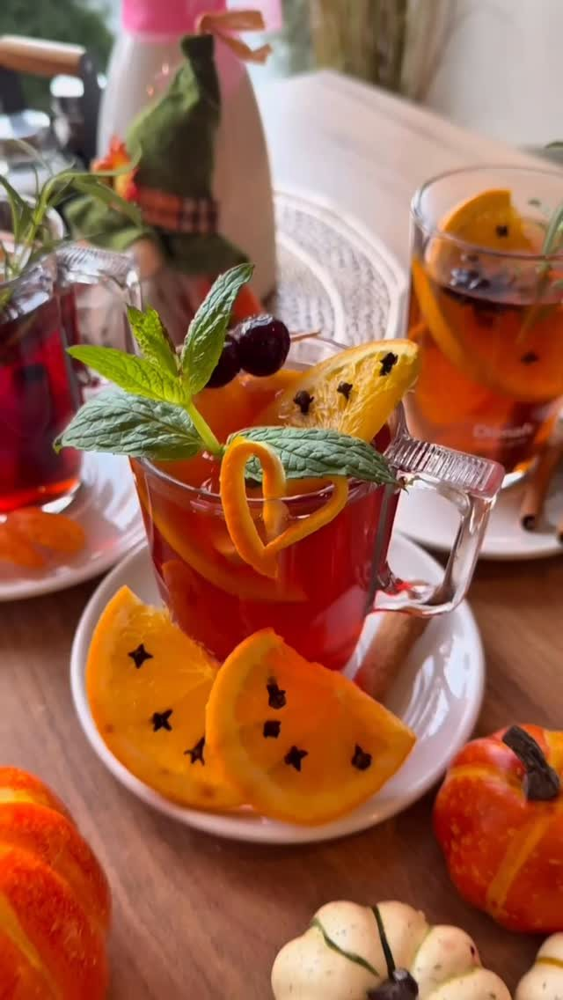

Restauracja Na Rynku
Restauracja Na Rynku

Restauracja Na Rynku powstało z prostej potrzeby - żeby w okolicy było miejsce, gdzie dobrze się je i miło spędza czas. Bez sztuczności, bez udawania, za to z uwagą do tego, co ląduje na talerzu.
Gotujemy ze świeżych składników i sami jadamy to, co podajemy gościom. Lubimy, gdy ludzie zostają u nas dłużej, rozmawiają i wracają - bo właśnie po to to wszystko robimy.
Poznaj nas →Trochę naszych dań i kawałek atmosfery, jaka panuje u nas przy stolikach. Najlepiej jednak przekonać się na miejscu.





Wpadnij na obiad, kolację albo kawę - albo zarezerwuj stolik z wyprzedzeniem.